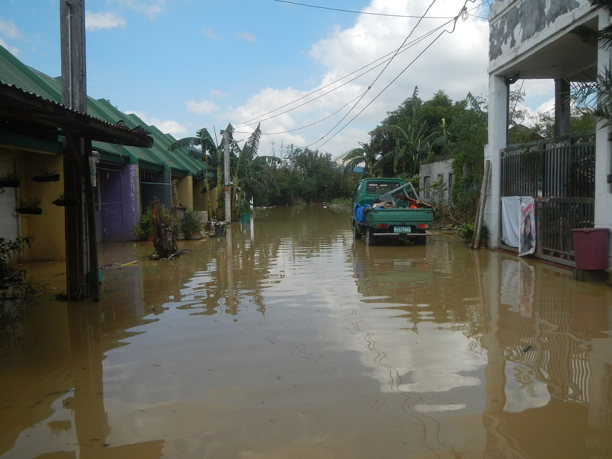
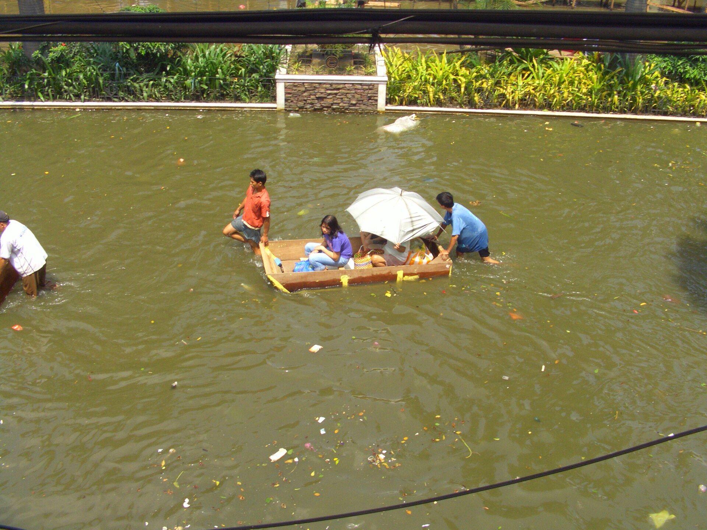
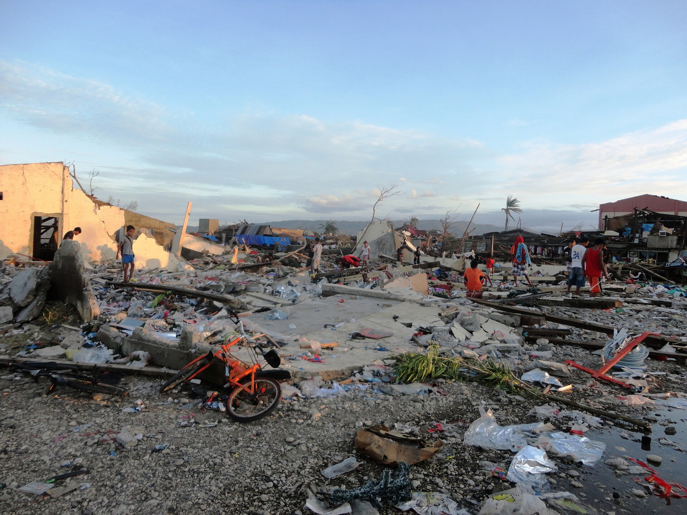

_of_Typhoon_Vamco_Calumpit,_Bulacan_21.jpg){kind=link}
,_Philippines_2009._Photo-_AusAID_(10695673035).jpg){kind=link}

Do not create dependency
No cloud account on the alert path, no monthly fee, no vendor who owns the radio. Firmware and drawings go in the public repository as they exist. Today that repository is this website.
Manifesto
When the river rises, a family in the valley should not have to wait for a saturated mast, a social feed, or a desk in the capital.
People along these rivers lose lives, houses, and harvests because the warning is built on the wrong terms. It has to be written, posted, and received on a phone that still has load, at night, while the tower is busy or already dark.
This started from family on that ground. I am paying for the first five nodes myself. There is no grant and no customer. They will be left outside until they die. What I come back to read is the log, not a press release.
These are photographs of floods and typhoons in the Philippines. They are not photographs of this project. Sites for the first five nodes are not chosen.



No cloud account on the alert path, no monthly fee, no vendor who owns the radio. Firmware and drawings go in the public repository as they exist. Today that repository is this website.
A node broken by a storm should not need a flight and a compiler. Keyed plugs, a blink code, and a drawing in the lid are the rules. They are not true of a built unit yet. The first five are how they get tested.
| Step | The chain people have | What the mesh is for |
|---|---|---|
| See it | Someone looks, or a sensor reports to an office that is not on the river. | A node at the water reads stage and how fast it is rising. |
| Carry it | A 4G or 5G tower. It clogs, or it dies when the power does. | A short LoRa frame, hop by hop. No mast and no internet on the path. |
| Say it | A person writes the post, cuts the graphic, or reads it on the air. | Two nodes have to agree. Then the frame moves. No newsroom. |
| Hear it | A phone, a charged battery, and paid load, in the dark. | On the first five: a log, and a buzzer if a person is there. A siren or a watch only after someone who lives there asks. |
| How long | Tens of minutes, often hours. Sometimes the water is already in the house. | No desk in Manila on the path. The frame still takes as long as the hops take. That is seconds. It is not a measured fraction of a second. |
The shape of those five nodes is on the five. How a frame would move is on protocol.